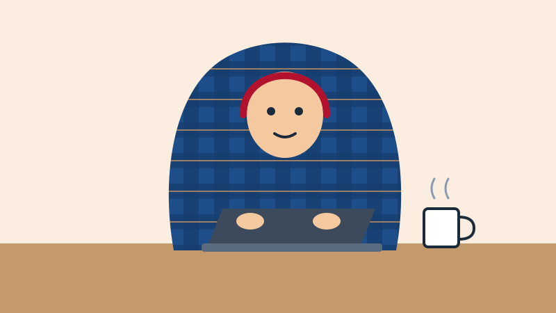

Gran ranking de mantas para teletrabajar
Redacción · · 3 min de lectura
La manta (o cobija, según de qué lado del Atlántico leas) es tu herramienta de trabajo principal en invierno. Más importante que el portátil: puedes poner el portátil sobre la manta, pero no al revés.
Cómo las probamos
- 8 horas de videollamadas dentro de cada una.
- Intentamos alcanzar el café sin sacar las manos.
- Contamos cuántas veces el gato intentó quitárnosla.

Resultados
| Manta | Calor | Apta para cámara | Interés del gato |
| Polar | 4/5 | Sí | Alto |
| De lana | 5/5 | Pica | Medio |
| Con mangas | 4/5 | Da vergüenza | Bajo |
| La de la abuela | 5/5 | Solo con audio | Máximo |
Conclusión
Quédate con la de la abuela. Y apaga la cámara.
Como dicen los británicos: «Keep calm and stay under the blanket».